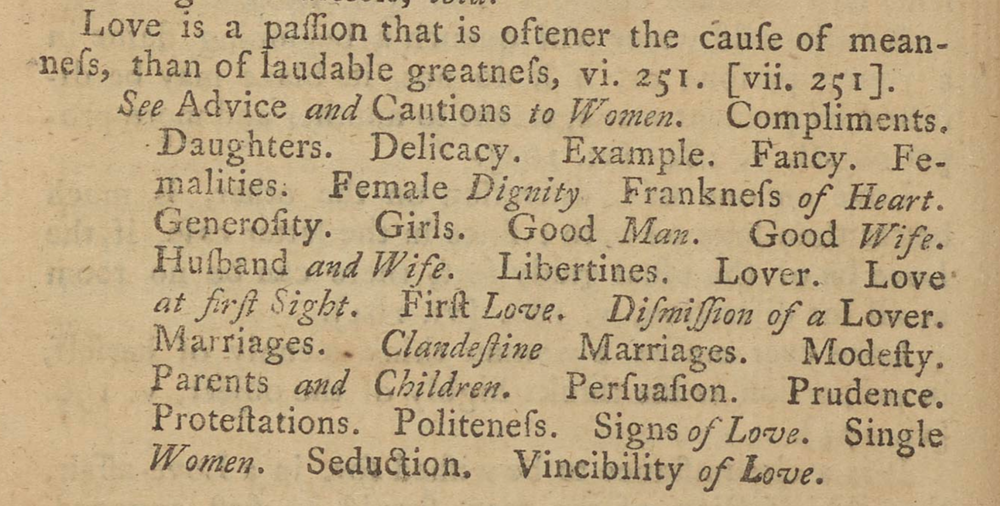

In addition, Richardson includes an elaborate network of cross-references within each novel section. At the end of each subject section, the editor suggests other subjects that the reader might refer to; for example, at the end of the maxims on “Duty. Obedience” in Clarissa, the editor also advises the reader to also “See Parents and Children” (119). In some sections, the cross-referencing can become quite elaborate, as is evident by the 32 referenced subjects at the end of the section on “Love” in Grandison. These references encourage the reader to read non-linearly, flipping to different sections of the book as they reference back to the original novels.
The suggestions always refer to other sections within that particular novel collection. The Pamela section has 372 total cross-references to another subject, with each subject having an average of 3 cross-references. Clarissa has 275 cross-refernces, an average of only 2 per subject, and Grandison has a total of 674, with an average of 4.7 per subject.
{Return to Tour Table of Contents}